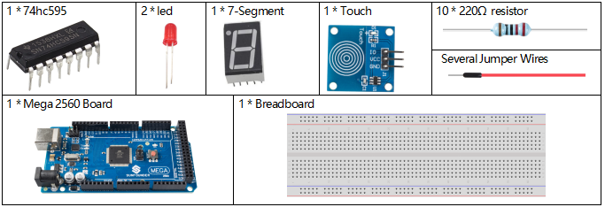
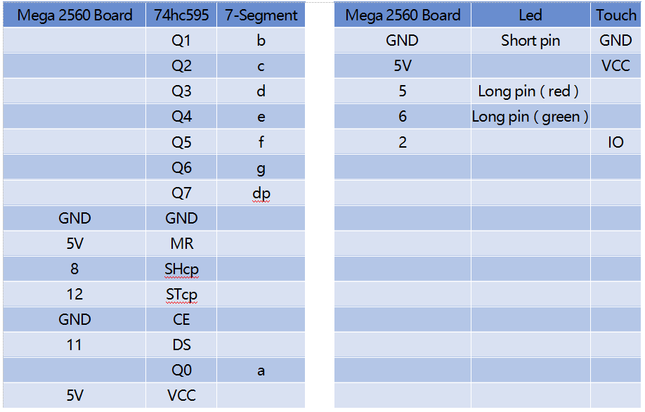
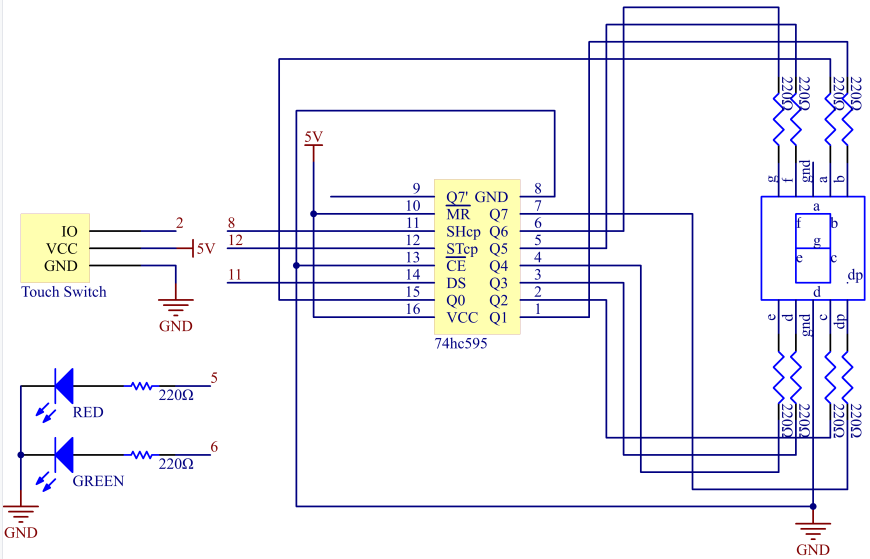
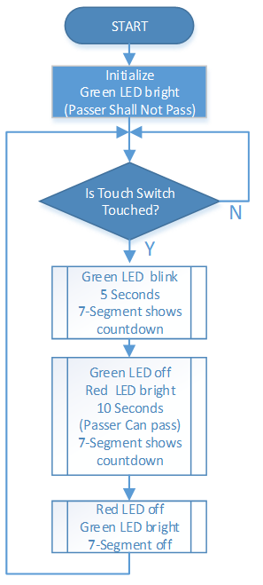

3.2 Fußgängerüberwegstaste¶
Überblick¶
Wenn Fußgänger die Straße überqueren, brauchen sie nur die Taste am Straßenlaternenpfeiler berühren, das grüne Licht über der Fahrbahn wird rot und Fußgänger können sicher passieren. Auf diese Weise wird die Notlage der Bürger, die die Straße überqueren, vollständig gelöst. Gleichzeitig sind die Lichter über der Fahrspur immer grün, wenn keine Fußgänger die Straße überqueren können, was die Effizienz und Kapazität der Straße erheblich verbessert.
Erforderliche Komponenten¶
Fritzing Circuit¶
In diesem Beispiel sind 74hc595, 7-Segment, LED, Berührungssensor gemäß Tabelle anzuschließen.

Schematische Darstellung¶
Beispiel Erklärung¶
Der Workflow des Projekts ist im Flussdiagramm dargestellt. Die Funktion der Nummernanzeige von 7-Segmenten wird durch Schreiben von 8-Bit-Daten in 74HC595 realisiert. Wenn 「0「 angezeigt werden muss, werden die Pins abcdef der Segmentanzeige mit dem hohen Pegel verbunden. Die Pins g und dp müssen mit einem niedrigen Pegel verbunden werden, um 「0x3f」 (B00111111) in die Codes zu schreiben. Die vollständigen Codes für die Nummernanzeige des 7-Segments lauten wie folgt.
Numbers |
Gemeinsame Kathode |
|
(DP)GFEDCBA |
Hex Code |
|
0 |
00111111 |
0x3f |
1 |
00000110 |
0x06 |
2 |
01011011 |
0x5b |
3 |
01001111 |
0x4f |
4 |
01100110 |
0x66 |
5 |
01101101 |
0x6d |
6 |
01111101 |
0x7d |
7 |
00000111 |
0x07 |
8 |
01111111 |
0x7f |
9 |
01101111 |
0x6f |
Phänomen Bild¶